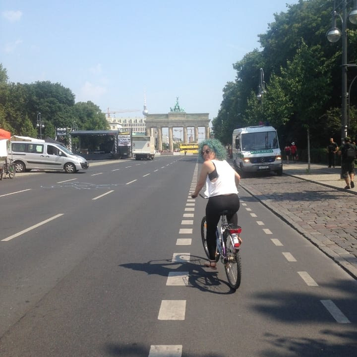
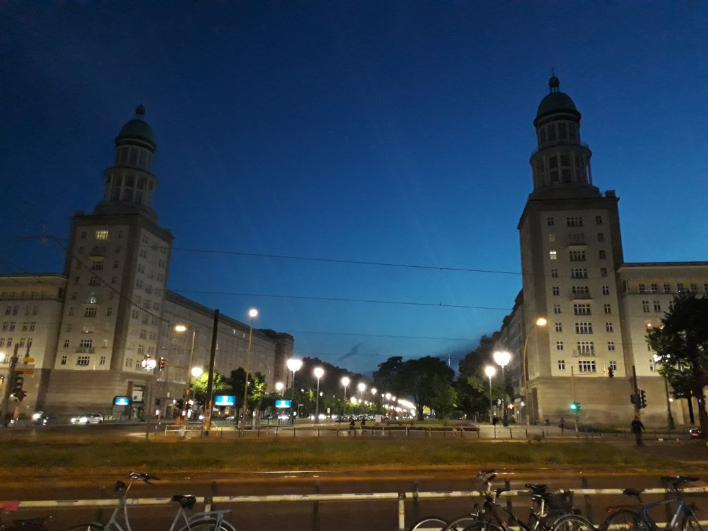
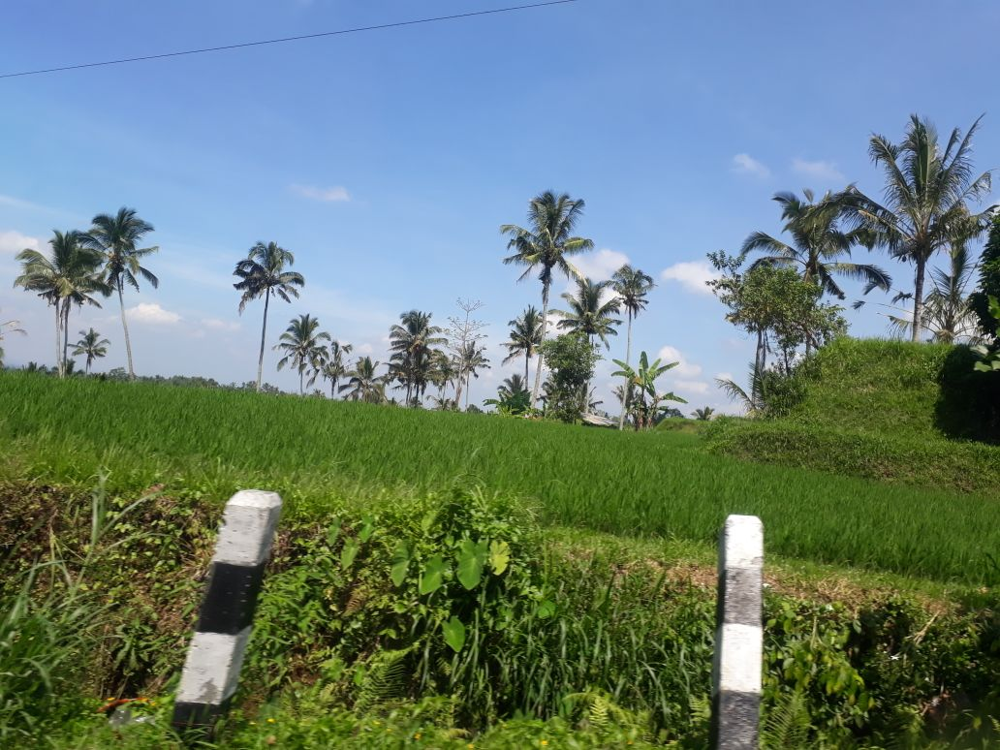
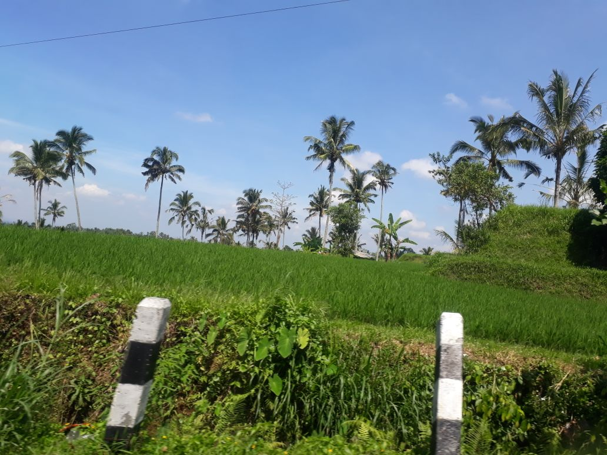
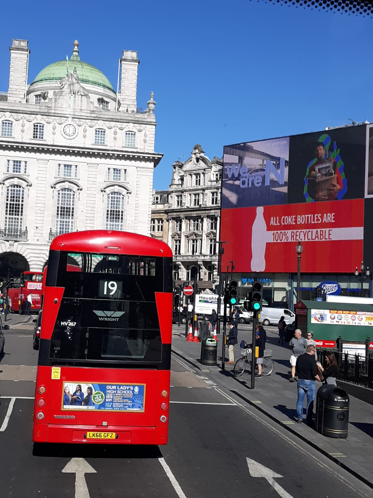

“As a woman I have no country. As a woman my country is the whole world.” – Virginia Woolf
My love for travel, I believe, runs in the family. Two of my uncles have traveled world wide, taking my grandparents with them whenever they could. We are also a family of immigrants. My maternal grandparents moved from Spain to Venezuela for better opportunities for their children. My mother and I from Venezuela to California for the same reasons. I later moved back to the Europe in search of better opportunities as well. In the span of 5 years, I moved to 3 different countries.
Traveling for me is just, self-care. I love learning new streets, new foods. I absolutely love hearing different languages, even if I don't understand. I love seeing how incredibly similar we all are around the globe, even if the countries are miles apart one sees a lot of similarities. Yet also a bit different in regards to cultures and family values, and yet very accepting of others. It's the little things you learn from each country and each person you meet that makes me so hungry to get to know it better.
Countries I've had the pleasure to travel to are:
- Colombia
- United Kingdom
- Netherlands
- Belgium
- Spain
- France
- Germany
- Poland
- Czech Republic
- Italy
- Croatia
- Greece
- Bulgaria
- Hungary
- Vietnam
- Thailand
- Singapore
- Indonesia
 
One thing that I get asked a lot is, "How do you afford to travel? You must be rich!" In truth, I wish I was rich, but I am not. I am just passionate about travel, so I work for what I want.
While living in Europe, I was allowed to take between 20-28 days of paid vacations, so that helped me a lot. For longer travels, I just worked my butt off at a job, then left. I also did not even think about going out or eating out ,which was easy because I am a hermit anyways and love my cooking and I don't drink. If any of my friends fancied to hang out, I would ask to do a movie night at home or go paint or read at the park! I would also just take out the money I needed for rent, food, and emergencies, and the rest would go to savings for the trip
 

My method is not for everyone, but it is what worked for me and what allowed me to visit so many amazing places, so I have no regrets. I feel extremely thankful for the opportunities and of my grit for wanting to travel.
To plan my travels I would go to websites such as Skyscanner , Google Flights, and Kayak to look for the best flight deals. I used to fly with Ryanair often while in Europe too, I had found before tickets from Berlin to London and back for 20€. Same story for when I flew from Berlin to Budapest for my 25th birthday!
When it came for where to stay, I relied heavily on Airbnb, Bookings.com, and also just any hostels with good raiting. Once I also tried Couchsurfing in Glasgow, Scotland.
